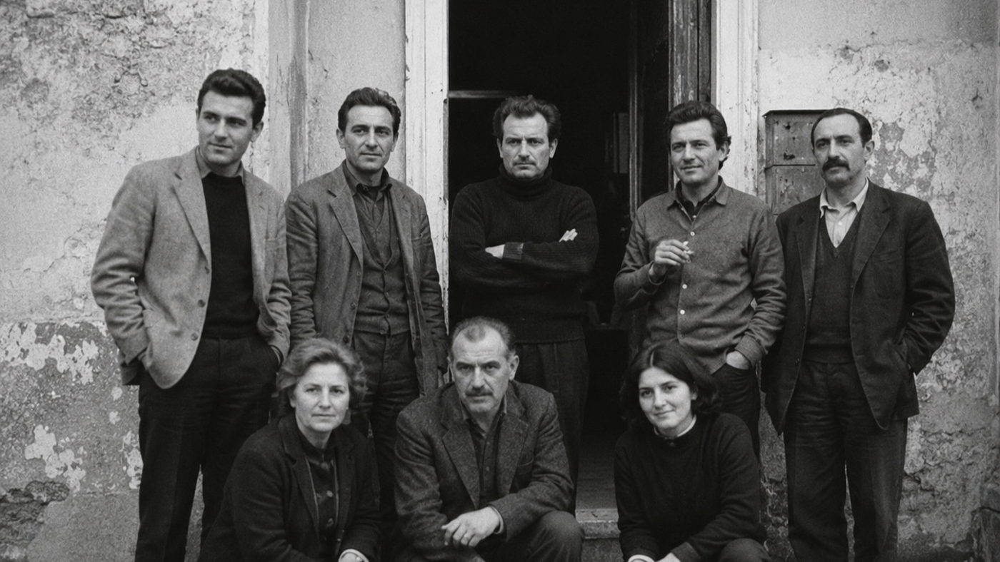
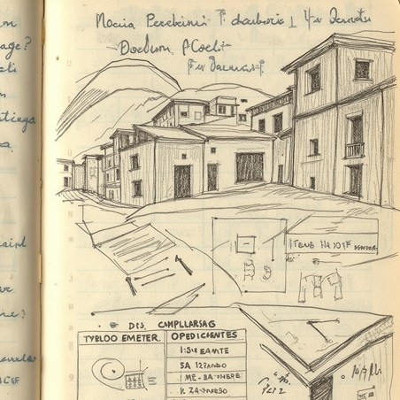
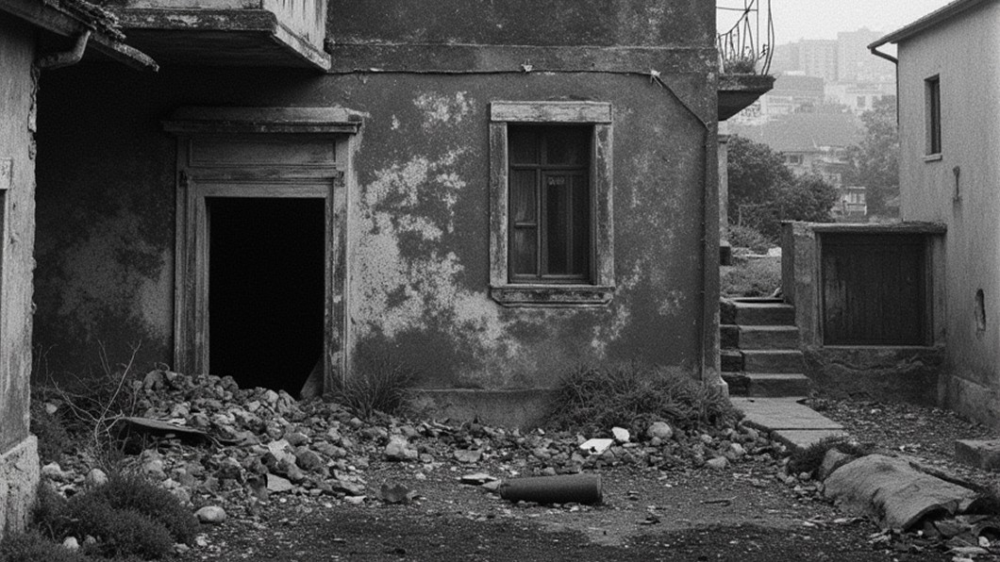
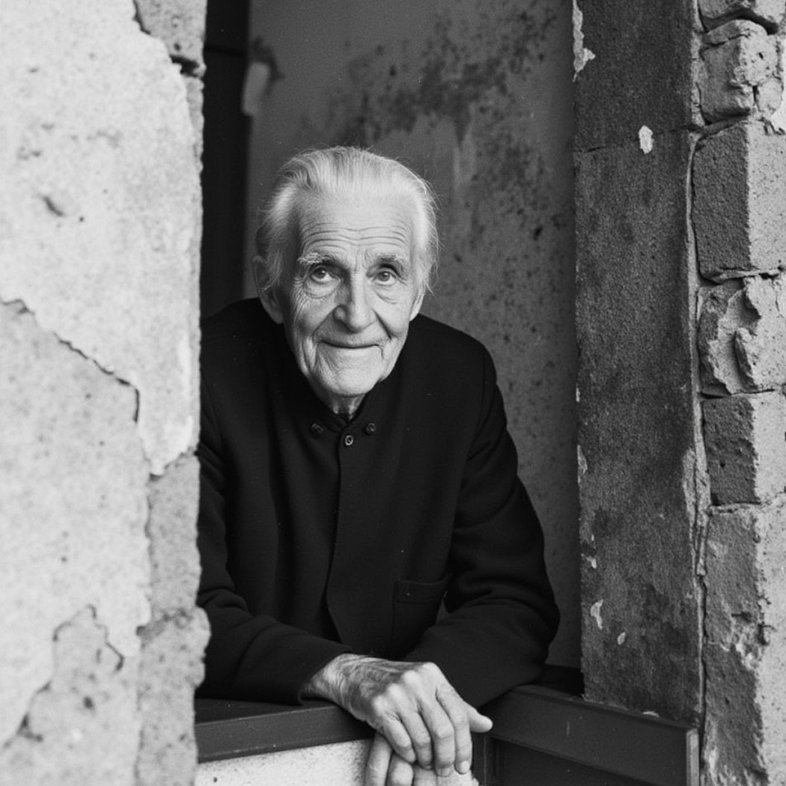
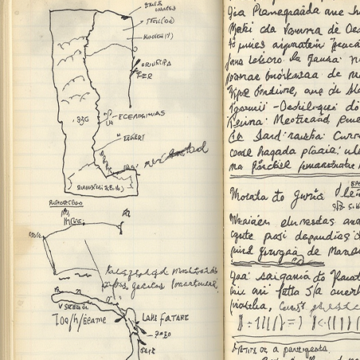
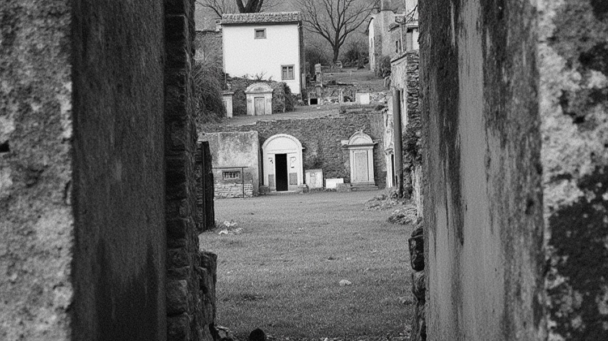

— Scorza, taccuino V, 1983

Le ricerche condotte tra il 1964 e il 1986 si sviluppano in territori interessati da profonde trasformazioni economiche e urbanistiche. Molti dei centri documentati vengono coinvolti in programmi di sviluppo regionale, espansioni edilizie e interventi infrastrutturali promossi come strumenti di integrazione del Mezzogiorno nel sistema produttivo nazionale. Le fotografie e gli appunti registrano però una discrepanza crescente tra pianificazione e vita quotidiana. Le strutture vengono costruite, ma non si attivano.Gli spazi esistono, ma non generano continuità. Le persone non restano, perchè non trovano condizioni socio-economiche stabili.
Nel corso degli anni, diversi antropologi lavorano sugli stessi territori:
- Pietro Scorza (1939-1991) presso Zagara, Santa Rena, Monteferro
- Luigi Varani (1931-1988) presso Serra Vasta, Valle Cupa, Rocca Secca, Riva Spenta, Borgo Salso, Poggio Nero, Pietra Lenta
- Gino Ferri (1929-1989) presso Serra Vasta, Vallefredda, Fonte Secca, Colle Ombra, Fonte Chiusa, Piana Morta, Borgo Cupo, San Velio
- Aldo Fiore (1934-1993) presso Colle Ombra, Monteferro, Borgo Cupo, San Velio
- Rinaldo Maffei (1932-1990) presso Serra Antica, Valle Cupa, Serra Vasta, Rocca Secca
Le ricerche non vengono concepite come denuncia esplicita, ma finiscono progressivamente per documentare una stessa condizione: territori che continuano a esistere senza riuscire a produrre una reale continuità abitativa.
— ALDO FIORE, 1984
I dati raccolti tra gli anni Sessanta e Ottanta mostrano una riduzione costante della densità abitativa: le generazioni più giovani lasciano i centri documentati in modo sistematico, mentre le nascite si riducono fino a diventare quasi assenti. Le strutture restano, ma il ricambio si interrompe.
Le persone che continuano ad abitare questi luoghi appartengono quasi esclusivamente a fasce di età avanzata. Gli spazi vengono mantenuti, adattati, utilizzati in forma minima, ma senza prospettiva di continuità. Le case non vengono abbandonate improvvisamente. Restano occupate fino alla morte di chi le abita. In molte annotazioni emerge la consapevolezza, da parte degli stessi abitanti, di vivere in luoghi destinati a scomparire nel giro di una generazione. Non come conseguenza di un evento traumatico, ma come esito lento e già visibile.
Le attività si riducono, gli spazi pubblici smettono progressivamente di funzionare, le relazioni si assottigliano. Le infrastrutture restano presenti, ma senza una popolazione sufficiente ad attivarle. Non si registra una fine improvvisa. Si registra una diminuzione continua. I materiali non mostrano il momento del collasso, ma il tempo che lo precede: un tempo lungo, statico, in cui la scomparsa è già evidente ma non ancora compiuta.
Le persone documentate nell'archivio non osservano semplicemente il degrado dei luoghi in cui vivono. Osservano la loro progressiva estinzione, senza possibilità reale di modificarne la direzione. L'archivio non documenta solo territori marginali. Documenta comunità che assistono, lentamente e con lucidità, alla propria fine.

— Ferri, Fonte Secca, 1981

Tra il 1992 e il 1997 la Fondazione avvia un processo sistematico di catalogazione e digitalizzazione preliminare dei materiali. L’archivio viene organizzato secondo criteri condivisi:
- anno
- autore
- regione
- densità abitativa
- tipologia documentaria
Fotografie, taccuini e dati vengono classificati con precisione e ordinati all’interno di un sistema unitario. L’obiettivo della Fondazione non è costruire una raccolta memoriale, ma uno strumento di studio sulle trasformazioni dei territori marginali del Sud Italia. Nel 1995 la Fondazione entra nel programma nazionale: “Riabitare il Sud” iniziativa dedicata a sviluppo locale, rigenerazione territoriale e continuità abitativa nelle aree interne. Il finanziamento consente l’espansione dell’archivio e la prosecuzione delle ricerche sul campo.
Nel 1997 la Fondazione perde l’assegnazione del bando “Riabitare il Sud”. La cessazione del finanziamento interrompe progressivamente: le attività di ricerca, il lavoro sul campo, il processo di catalogazione. La perdita del sostegno economico coincide con una più ampia riduzione dell’interesse istituzionale verso questi territori. L’archivio smette progressivamente di essere percepito come strumento attivo di studio e viene ridotto a materiale documentario da conservazione. Nel 1999 la Fondazione interrompe definitivamente le attività operative. Non viene realizzata una pubblicazione conclusiva. Non vengono avviate ulteriori campagne di ricerca.

Dopo la chiusura della Fondazione, gran parte dei materiali rimane conservata in condizioni precarie: scatole non catalogate, negativi fotografici deteriorati, taccuini incompleti, registrazioni prive di trascrizione. Il lavoro di riordino viene portato avanti in modo autonomo, senza supporto istituzionale continuativo e senza un finanziamento stabile. La digitalizzazione non nasce come progetto editoriale o accademico, ma come tentativo di impedire la dispersione definitiva dei materiali raccolti nel corso di oltre trent'anni di ricerca.
L'archivio digitale attuale rappresenta quindi una versione parziale ma consultabile del fondo originario della Fondazione Scorza. Parte dei documenti è andata perduta nel tempo, altri risultano danneggiati, incompleti o difficilmente leggibili. Nonostante questo, la struttura archivistica originaria viene mantenuta e rispettata. La tassonomia elaborata dalla Fondazione negli anni Novanta continua a organizzare i materiali.
Negli anni successivi, la famiglia Scorza continua a operare sul territorio di Zagara e nei centri limitrofi attraverso attività locali di raccolta, conservazione e testimonianza.
L'archivio non conserva soltanto immagini di luoghi marginali, ma la traccia di una trasformazione incompiuta che attraversa intere generazioni. I materiali raccolti restituiscono territori che non sono mai riusciti a stabilizzarsi economicamente o socialmente, nonostante decenni di interventi pubblici, programmi di sviluppo e processi di modernizzazione. I paesi non scompaiono improvvisamente: si riducono lentamente, fino a diventare sempre meno distinguibili dalla propria memoria. L'archivio conserva la traccia di un fallimento che non riguarda un singolo luogo, ma un'intera idea di sviluppo nazionale e di integrazione del Sud Italia.

— Pietro Scorza, annotazione non datata